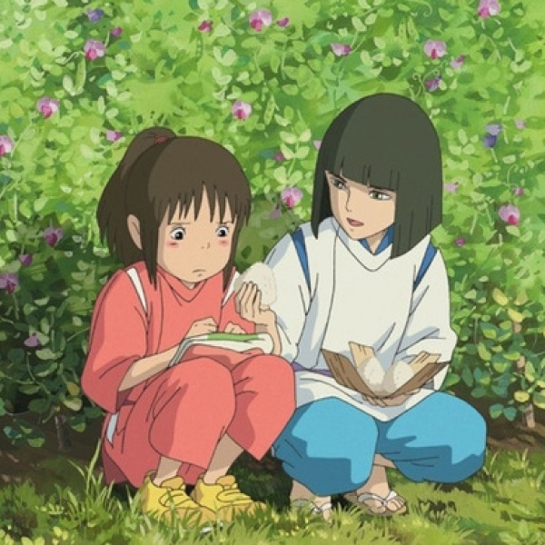
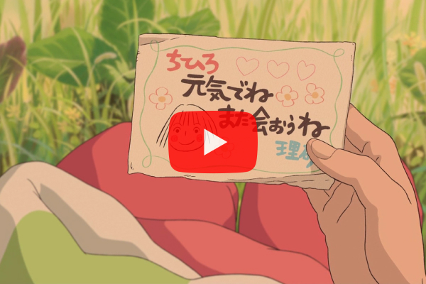
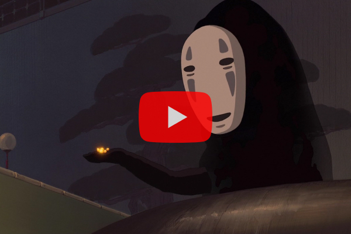
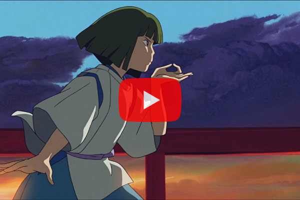
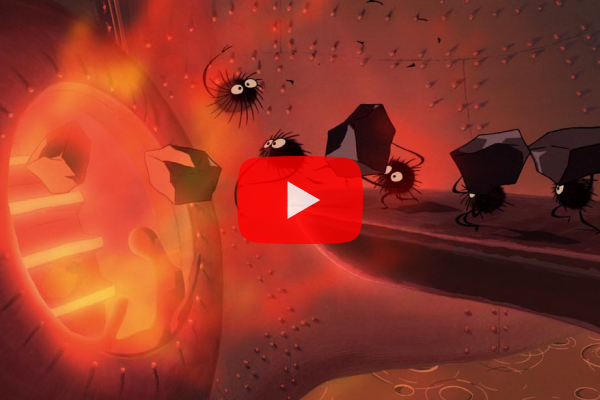

OST
센과 치히로의 행방불명 OST

- 센과 치히로의 행방불명 OST
- 스튜디오 지브리 작품. 「센과 치히로의 행방불명(Spirited Away)」 오리지널 사운드트랙 일본 영화사상 최대 관객 동원/최고 흥행 수익을 기록한 작품! 인간에게 금지된 신들의 세계로 빠져들다! 짜증 잘 내고, 칭얼거리기 좋아하는 평범한 열 살 짜리 소녀 치히로 세 식구는 이사가던 중 길을 잘못들어 낡은 터널을 지나가게 된다. 터널 저편엔 폐허가 된 마을이 있었고 그곳엔 이상한 기운이 흘렀다. 인기척 하나 없고 너무나도 조용한 이 마을의 낯선 분위기에 불길한 기운을 느낀 치히로는 엄마, 아빠에게 돌아가자고 조르지만 엄마, 아빠는 호기심에 들 떠 마을 곳곳을 돌아다니기 시작한다. 그러다가 어느 음식점에 도착한 치히로의 부모님은 그 곳에 차려진 음식들을 보고 즐거워하며 허겁지겁 먹어대기 시작하는데...
작곡 : 히사이시 조, 기무라 유이
Other OST
-

- 히사이시 조 지브리 25주년 콘서트 센과 치히로의 행방불명 OST
- 1. Inochi no Namae (TheName of Life), Vocals : Ayaka Hirahara 생명의 이름
2. Futatabi (Reprise) Vocals : Ayaka Hirahara 또 다시
-

- 센과 치히로의 행방불명 OST - 가오나시
- 센과 치히로의 행방불명의 등장인물 중 가오나시의 메인 테마곡이다.
-

- 센과 치히로의 행방불명 OST - 용의 소년
- 센과 치히로의 행방불명의 남주인공, 하쿠의 메인 테마곡이다.
-

- 센과 치히로의 행방불명 OST - 보일러 벌레
- 센과 치히로의 행방불명 작품 속 보일러실에 있는 숯 검댕이들의 메인 테마곡이다.